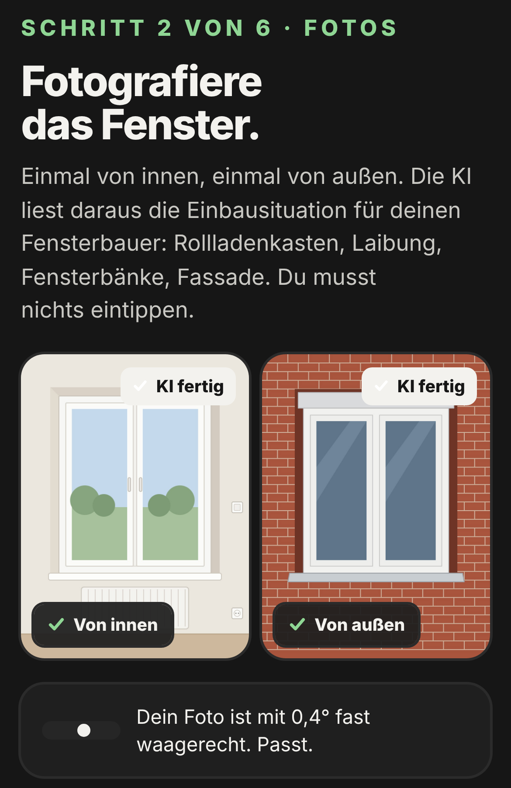

Fotos innen und außen
Zwei Fotos
je Fenster.
Von innen und von außen. Die KI liest daraus Rollladenkasten, Anschlag, Fensterbänke und Fassade.

- Je 1 Foto innen und außen
- Wasserwaage im Bild
- Maße gegen Foto geprüft
Fotos innen und außen
Von innen und von außen. Die KI liest daraus Rollladenkasten, Anschlag, Fensterbänke und Fassade.
